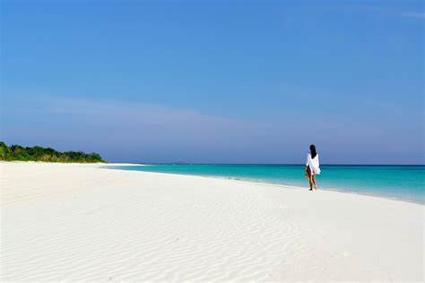

Essential Travel Tips for Amanpulo
Maximize your Amanpulo experience with these travel tips.
Pack Light for Island Luxury
 When visiting Amanpulo, pack lightly to make your journey more convenient. The island offers everything you need for a relaxing vacation, so leave the heavy bags behind. Focus on essentials like swimwear, comfortable clothes for island activities, and casual evening wear for dinner at our resort.
When visiting Amanpulo, pack lightly to make your journey more convenient. The island offers everything you need for a relaxing vacation, so leave the heavy bags behind. Focus on essentials like swimwear, comfortable clothes for island activities, and casual evening wear for dinner at our resort.
Comfortable sandals, sun protection, and swimwear are all you’ll need to enjoy the tropical island lifestyle.
Explore the Island on Foot or By Bike
Experience Amanpulo in the most personal way by walking or cycling around the island. With scenic walking trails, you can take in the natural beauty of the island at your own pace. Bikes are available for use, making it easy to explore every corner of the island, from the lush jungles to the pristine beaches.
Take a leisurely stroll along the beach or cycle around to uncover hidden spots where you can enjoy a private moment by the sea.
Stay Hydrated and Protect Yourself from the Sun
Palawan's tropical climate means that it can get hot and sunny, so always stay hydrated and use sunscreen. The sun can be intense during midday, so it’s best to seek shade or enjoy indoor activities during peak sunlight hours.
Carry a reusable water bottle, apply sunscreen regularly, and wear a hat to protect yourself while enjoying outdoor adventures on the island.
Indulge in Amanpulo’s Spa and Wellness
For ultimate relaxation, take advantage of Amanpulo's world-class spa and wellness services. From traditional Filipino massage therapies to modern wellness rituals, you can enjoy a tranquil spa experience that will rejuvenate your mind and body.
After a long day of sunbathing and exploration, pamper yourself with a relaxing massage or enjoy a meditation session surrounded by nature’s beauty.
Respect the Local Environment and Wildlife
While you enjoy your stay at Amanpulo, remember to respect the island’s pristine environment. Stay on designated trails, avoid littering, and be mindful of wildlife, including the abundant marine life. Amanpulo is dedicated to preserving its natural beauty, and you can help by practicing eco-friendly habits during your visit.